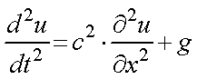
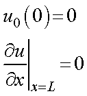
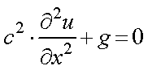
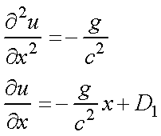
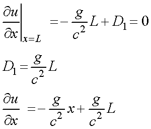
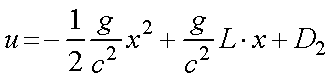
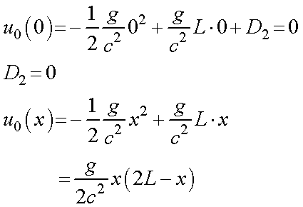
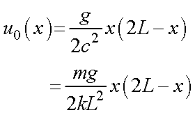
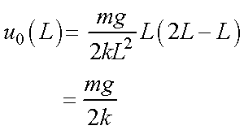
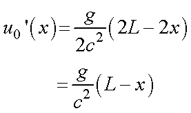

バネの自由落下における最下端の位置変化について，計算-2
・ 自重を考慮したバネ
バネを鉛直につるした場合のバネののびを考えましょう．
下端はその下にバネが存在しないために，バネののびは０となります．
上に行くほどそこからしたに存在するバネの重さがかかり，伸びが大きくなりますね．
重力を考慮に入れた式は，

となります．
バネの上端を，x=0，下端をx=L，とすると，境界条件は，

となり，また，弾性力と重力が釣り合って，静止している状態（時間変化はなし）なので，

です．これを解くと，

となり，境界条件から，


境界条件から，

ここで，バネの質量は，m=σ×L，となるので，

下端の変位は，

つまり，F=kx=mα，のちょうど半分となります．
また，各点のひずみ（のび）は微分となるので，

となり，ｘが増えるにつれ（下端に行くほど），ひずみ量は減少し，下端で０となります．